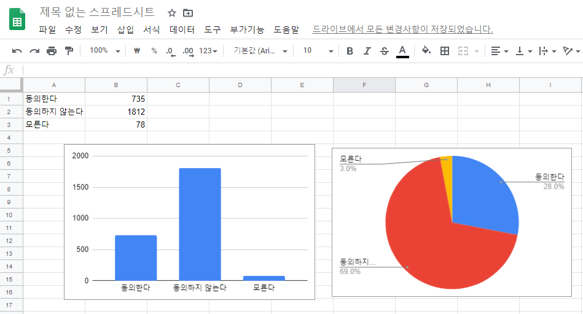
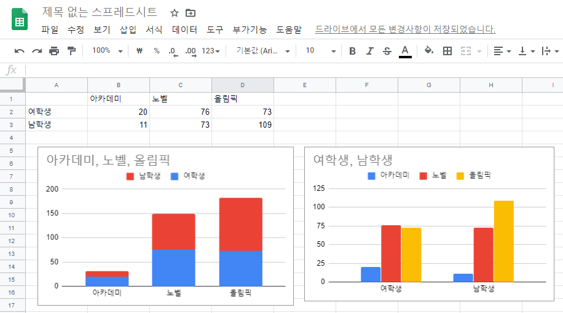
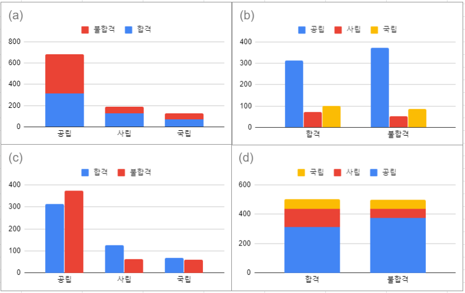

2.1 범주형 변수
1장에서 변수의 종류는 범주형 변수와 양적 변수가 있다고 배웠다. 이 장에서는 변수 하나에 대하여 기술하는(변수의 특징을 있는 그대로 서술하는) 방법과 변수들의 관계에 대하여 기술하는 방법을 배울 것이다.
변수에 대한 기술에는 두 가지 방법이 있는데, 하나는 그래프로 보여주는 것이고 다른 하나는 요약 통계량을 계산하는 것이다.
데이터 2.1. 사람마다 진실한 사랑은 하나일까?
\(2010\)년 미국의 한 여론조사 업체가 \(18\)세 이상의 성인 \(2625\)명을 대상으로 “사람마다 진실한 사랑은 하나 있다”고 말하는데 여기에 동의하느냐 물었다. 조사 업체는 질문에 동의하는 전체 비율은 물론 성별, 교육 수준별로 동의하는 비율이 얼마나 다른가에 대해서도 관심이 있었다. 표본은 무작위로 추출되었고 유무선 전화를 이용하였다.
예제 2.1. 표본과 모집단은 각각 무엇인가? 이 조사에서 표집편향이 있다고 생각하는가? 표본의 결과를 모집단으로 일반화 할 수 있을까?
풀이 (클릭하면 풀이가 보입니다)
표본은 설문에 응답한 \(2625\) 명의 성인이다. 모집단은 유선 또는 무선 전화를 가진 \(18\)세 이상의 미국인이다. 표본추출을 무작위로 하였으므로 표집편향은 없다. 또한 다른 종류의 편향이 발생할 이유도 없으므로 표본의 결과를 모집단으로 일반화 할 수 있다.
예제 2.2. 데이터 2.1에서 케이스와 변수는 각각 무엇인가? 변수는 범주형인가 아니면 양적인가?
풀이 (클릭하면 풀이가 보입니다)
케이스는 설문에 응답한 성인이다. 조사 개요를 보면 최소한 \(3\)개의 변수가 있다. 첫 번째 변수는 질문에 대한 동의 여부이다. 두 번째 변수는 성별이고 세 번째 변수는 교육 수준이다. \(3\)개 변수 모두 범주형 변수이다.
확인문제 1. 다음 중 범주형 변수의 특징으로 가장 적절한 것은?
1 수치 연산이 가능하고 평균을 계산할 수 있다.
2 변수 값이 정해진 범주 중 하나로 구분된다.
3 두 변수 사이의 관계를 분석하는 데 사용할 수 없다.
4 범주형 변수는 반드시 명목형 변수여야 한다.
확인문제 2. 범주형 변수에 대한 데이터를 기술하는 가장 적절한 방법은?
1 평균과 표준편차를 이용하여 변수의 분포를 분석한다.
2 각 범주의 빈도를 세어 도수분포표를 작성하거나 막대그래프로 표현한다.
3 데이터의 최소값과 최대값을 계산하여 범위를 구한다.
4 상자그림(Boxplot)을 이용하여 변수의 분포를 시각화한다.
확인문제 3. 다음 중 범주형 변수에 해당하는 것은?
1 사람의 키(cm)
2 시험 점수(\(100\)점 만점)
3 혈액형(A, B, AB, O)
4 연봉(원화 기준)
범주형 변수가 한 개일 때
데이터 2.1 에서 응답자 \(2625\)명 중에 “진실한 사랑은 하나”라는 것에 \(735\)명은 동의하였고, \(1812\)명은 동의하지 않았고, \(78\)명은 모른다고 대답하였다. 범주형 변수의 각 범주의 빈도를 표로 만든 것을 빈도표(frequency table)라고 한다.
| 응답 | 빈도 |
|---|---|
| 동의한다 | 735 |
| 동의하지않는다 | 1812 |
| 모른다 | 78 |
| 계 | 2625 |
“진실한 사랑은 하나”라는 것에 동의한 사람의 비율은 얼마일까? 동의한 사람의 수를 전체 응답자로 나누면 된다.
\[\frac{735}{2625} = 0.28\]
범주 별로 비율을 모두 구하여 표로 만든 것을 상대빈도표(relative frequency table)라고 한다.
예제 2.3. “진실한 사랑은 하나”라는 것에 응답한 사람들의 상대빈도표를 만드시오.
풀이 (클릭하면 풀이가 보입니다)
“동의하지 않는다”라고 응답한 비율 = \(1812/2625 = 0.69\)
“모른다”라고 응답한 비율 = \(78/2625 = 0.03\)
| 응답 | 상대빈도 |
|---|---|
| 동의한다 | 0.28 |
| 동의하지않는다 | 0.69 |
| 모른다 | 0.03 |
| 계 | 1.00 |
막대 그래프와 파이 차트 만들기
- 크롬 웹 브라우저에서 구글 아이디로 로긴한다.
- 주소 창에 “chrome://apps”을 입력한다.
- 스프레드 시트 앱을 클릭한다.
- 데이터를 입력한다.
- 삽입에서 “차트”를 선택한다.
- 원한다면 차트 편집기에서 “차트 유형”을 바꿀 수 있다.

1장에서 언급했던 것처럼 모집단과 표본을 구분하는 것은 매우 중요하다. 이런 이유로 비율을 모집단에서 계산했는지 아니면 표본에서 계산했는지에 따라 다른 기호를 사용한다.
표본에서 계산한 비율은 \(\hat{p}\)이라 표기하고 “p-hat”으로 읽는다. 모집단에서 계산한 비율은 \(p\)로 표기한다.
예제 2.4. 다음 각각의 상황에서 올바른 기호를 사용하여 히스패닉계 미국인의 비율을 계산하라.
(1) \(2010\)년 미국 센서스 조사 결과 미국인은 \(308,745,538\)명이다. 이들 중에서 히스패닉이라고 응답한 사람은 \(50,325,523\)명이다.
(2) 콜로라도에서 무작위로 \(300\)명의 표본을 뽑았더니 그들 중에서 히스패닉은 \(62\)명이다.
풀이 (클릭하면 풀이가 보입니다)
(1) 모집단에서 히스패닉계 미국인의 비율을 구한다.
\[p = \frac{50,325,523}{308,745,538}\]
(2) 표본에서 히스패닉계 미국인의 비율을 구한다.
\[\hat{p} = \frac{62}{300}\]
확인문제 1. 다음 중 범주형 변수의 상대빈도표를 활용하는 주된 이유로 적절한 것은?
1 데이터의 평균과 표준편차를 계산하기 위해
2 각 범주에 속하는 데이터의 비율을 쉽게 비교하기 위해
3 모집단 전체의 특성을 정확하게 추정하기 위해
4 데이터 간의 순서를 명확하게 정리하기 위해
확인문제 2. 다음 중 표본에서 계산한 비율을 나타내는 올바른 기호는?
1 \(p\)
2 \(p^*\)
3 \(\hat{p}\)
4 \(\sigma\)
확인문제 3. 다음 중 범주형 변수의 시각적 표현으로 가장 적절한 것은?
1 히스토그램
2 산점도
3 막대그래프
4 상자그림
범주형 변수가 두 개일 때
“진실한 사랑은 하나”라는 말에 동의하는 사람의 비율은 성별로 다를까? 또는 교육 수준별로 다를까? 두 질문 모두 범주형 변수 두 개 사이에 관계가 있는지 물어보는 것이다.
두 범주형 변수 사이의 관계를 조사하기 위하여 \(2\)차원 표를 사용한다. 변수 하나의 범주를 행으로 나열하고 다른 변수의 범주는 열로 나열한다. 테이블의 각 셀에 해당 데이터의 빈도를 기록한다. 마지막 행이나 열에 합계를 기록한다.
| 구분 | 남성 | 여성 | 합계 |
|---|---|---|---|
| 동의한다 | 372 | 363 | 735 |
| 동의하지않는다 | 807 | 1005 | 1812 |
| 모른다 | 34 | 44 | 78 |
| 합계 | 1213 | 1412 | 2625 |
예제 2.5. 위의 \(2\)차원 표를 사용하여 다음 각각의 질문에 답하라.
(1) 여성 중에 동의한 비율은?
(2) 동의한 사람 중에 여성의 비율은?
(3) 남성 중에 동의한 비율은?
(4) 진실한 사랑은 하나라고 믿는 사람의 비율은 남성과 여성 중에 누가 더 높은가?
(5) 응답자의 몇 퍼센트가 여성인가?
풀이 (클릭하면 풀이가 보입니다)
(1) 여성 중에 동의한 비율 = \(363/1412 = 0.26\)
(2) 동의한 사람 중에 여성의 비율 = \(363/735 = 0.49\)
(3) 남성 중에 동의한 비율 = \(372/1213 = 0.31\)
(4) 진실한 사랑은 하나라고 믿는 남성의 비율은 \(31\%\), 여성은 \(26\%\)이므로 남성이 더 높다.
(5) 응답자 중에서 여성의 비율 = \(1412/2625\)
예제 2.6. 1장의 데이터 1.1에서 졸업 후 대학생은 어떤 상을 받고 싶은지 물었다. 아카데미 상은 \(31\)명 중 \(20\)명이 여성, 노벨 상은 \(149\)명 중에 \(76\)명이 여성, 올림픽 금메달은 \(182\)명 중에 \(73\)명이 여성이었다.
(1) \(2\)차원 표를 만드시오.
(2) 가장 인기 있는 상은 무엇인가?
풀이 (클릭하면 풀이가 보입니다)
(1)
| 구분 | 아카데미상 | 노벨상 | 올림픽 | 합계 |
|---|---|---|---|---|
| 여성 | 20 | 76 | 73 | 169 |
| 남성 | 11 | 73 | 109 | 193 |
| 합계 | 31 | 149 | 182 | 362 |
(2) 올림픽 금메달을 선택한 학생이 다른 상보다 많다. 올림픽을 선택한 학생의 비율은 \(182/362 = 0.503\) 이다. \(50.3\%\)의 학생이 올림픽 금메달을 선택했다.
확인문제 1. 범주형 변수 두 개 사이의 관계를 분석할 때 가장 적절한 도구는 무엇인가?
1 히스토그램
2 \(2\)차원 표 (contingency table)
3 산점도
4 상자그림
확인문제 2. 진실한 사랑에 동의한 사람 중에서 여성이 차지하는 비율을 구하는 방법으로 올바른 것은?
1 여성 중에서 동의한 사람의 수를 여성 전체 응답자 수로 나눈다.
2 여성 중에서 동의한 사람의 수를 전체 응답자 수로 나눈다.
3 동의한 사람 중에서 여성의 수를 전체 응답자 수로 나눈다.
4 동의한 사람 중에서 여성의 수를 동의한 전체 응답자 수로 나눈다.
확인문제 3. 졸업 후 받고 싶은 상에 대한 조사에서, 학생들의 선택을 \(2\)차원 표로 정리하는 가장 주된 이유는 무엇인가?
1 특정 상을 원하는 학생 수의 합계를 쉽게 구하기 위해
2 모든 학생이 같은 상을 원하도록 유도하기 위해
3 양적 변수를 범주형 변수로 변환하기 위해
4 전체 모집단의 비율을 정확하게 추정하기 위해
예제 2.7. 예제 2.6에서 올림픽 금메달이 가장 인기가 있음을 알았다. 올림픽 금메달은 성별과 연관이 있을까? 올림픽 금메달을 원하는 비율을 남녀 별로 계산하고 차이를 구하여 답하라.
풀이 (클릭하면 풀이가 보입니다)
데이터는 표본이므로 비율을 표기하는 기호로 \(\hat{p}\)을 사용한다. 두 개의 표본 비율을 계산할 것이므로 아래 첨자 F, M을 사용하여 성별을 구분한다. 올림픽 금메달을 선호하는 남학생의 비율은
\[\hat{p}_M = \frac{109}{193} = 0.565\]
이다. 올림픽 금메달을 선호하는 여학생의 비율은
\[\hat{p}_F = \frac{73}{169} = 0.432\]
이다. 비율 차이는
\[\hat{p}_M - \hat{p}_F = 0.565 - 0.432 = 0.133\]
이다. 표본에서 남학생이 여학생보다 올림픽 금메달을 선호하는 비율이 훨씬 높으므로 올림픽 금메달과 성별은 연관이 있다.
두 범주형 변수의 관계 시각화
- 스프레드 시트 앱을 열고 데이터를 입력한다.
- 삽입에서 차트를 선택한다.
- 차트 편집기에서 “차트 유형”을 변경한다.
- 차트 편집기에서 “행/열 전환”을 체크하면 행과 열의 서로 바꿀 수 있다.

예제 2.8. 전체 학생이 가장 선호하는 상과 여학생이 가장 선호하는 상은 무엇인지 그래프를 보고 답하라.
풀이 (클릭하면 풀이가 보입니다)
위의 왼쪽 그래프에서 막대 높이가 가장 높은 것은 올림픽 금메달이다. 따라서 가장 많은 학생이 선호하는 상은 올림픽 금메달이다. 여학생이 가장 많이 선호하는 상은 노벨상인데 올림픽 금메달보다 조금 더 많다(위 오른쪽 그래프 참조).
확인문제 1. 올림픽 금메달을 선호하는 비율을 남녀별로 비교하는 이유는 무엇인가?
1 전체 표본에서 올림픽 금메달을 가장 많이 선택했기 때문에
2 성별에 따라 특정 상을 선호하는 경향이 있는지 확인하기 위해
3 성별을 양적 변수로 변환하여 분석하기 위해
4 모든 학생이 동일한 선택을 하도록 유도하기 위해
확인문제 2. 두 개의 표본 비율을 비교할 때 사용하는 적절한 표기법은 무엇인가?
1 \(\hat{p}\)
2 \(\bar{x}\)
3 \(s^2\)
4 \(\mu\)
확인문제 3. 두 범주형 변수 간의 관계를 시각적으로 나타내기 위해 가장 적절한 그래프 유형은 무엇인가?
1 히스토그램
2 산점도
3 누적 막대 그래프
4 상자그림
학습 내용 정리
다음 사항을 이해하거나 해결하는 능력이 있어야 한다.
- 범주형 변수의 정보를 그래프나 표로 표현할 수 있다.
- 범주형 변수의 비율을 올바른 기호로 표현하고 계산할 수 있다.
- 두 개의 범주형 변수의 관계를 \(2\)차원 표로 만들 수 있다.
- \(2\)차원 표에서 필요한 비율을 찾을 수 있다.
- 두 개의 범주형 변수가 포함된 그래프를 이해할 수 있다.
비율
각 범주에 해당하는 비율은 범주의 빈도를 전체 케이스 수로 나눈 값이다.
비율에 대한 기호
표본에서 비율은 \(\hat{p}\)으로 표기하고 “p-hat”으로 읽는다.
모집단에서 비율은 \(p\)로 표기한다.
2차원 표
두 범주형 변수의 관계를 표현하기 위하여 \(2\)차원 표를 사용한다. 변수 하나의 범주를 행으로 나열하고 다른 변수의 범주는 열로 나열한다. 행과 열이 만나는 셀에 해당 빈도수를 기록한다.
확인문제 1. 범주형 변수의 정보를 효과적으로 표현하는 방법으로 가장 적절한 것은?
1 산점도
2 히스토그램
3 \(2\)차원 표 또는 막대 그래프
4 상자그림
확인문제 2. 표본에서 계산한 비율을 나타내는 적절한 기호는?
1 \(p\)
2 \(\mu\)
3 \(\hat{p}\)
4 \(\bar{x}\)
확인문제 3. 두 범주형 변수 간의 관계를 효과적으로 표현하기 위한 방법으로 적절한 것은?
1 \(2\)차원 표
2 선 그래프
3 점그래프
4 줄기-잎 그림
과제 2.1. 119명의 가위바위보 게임에서 매 게임 참가자가 무엇을 선택했는지 기록했다.
| 선택 | 빈도 |
|---|---|
| 가위 | 14 |
| 바위 | 66 |
| 보 | 39 |
| 합계 | 119 |
(1) 표본은 무엇인가?
1 119명의 게임 참가자
2 가위바위보 게임을 하는 모든 사람
3 참가자가 가위바위보 중에 선택한 것
4 참가자의 승리 여부
(2) 모집단은 무엇인가?
1 119명의 게임 참가자
2 가위바위보 게임을 하는 모든 사람
3 참가자가 가위바위보 중에 선택한 것
4 참가자의 승리 여부
(3) 측정한 변수는 무엇인가?
1 119명의 게임 참가자
2 가위바위보 게임을 하는 모든 사람
3 참가자가 가위바위보 중에 선택한 것
4 참가자의 승리 여부
(4)-a 가위의 상대빈도 (상대빈도를 계산하라. 반올림하여 소수점 이하 세 자리까지 계산하시오)
정답: 0.118
(4)-b 바위의 상대빈도 (상대빈도를 계산하라. 반올림하여 소수점 이하 세 자리까지 계산하시오)
정답: 0.555
(4)-c 보의 상대빈도 (상대빈도를 계산하라. 반올림하여 소수점 이하 세 자리까지 계산하시오)
정답: 0.328
(5) 위에서 계산한 표본 상대빈도가 모집단 상대빈도와 비슷하다면 어떤 것을 선택하는 것이 승률이 더 높을까?
1 가위
2 바위
3 보
4 어느 것이나 승률이 같다.
(6) 가위바위보 게임을 반복할 때 플레이어는 처음에 선택한 것을 잘 바꾸지 않는 경향이 있음을 발견했다. 다른 사람과 게임을 하는데 상대방이 바로 전에 보를 선택했다. 이번에 어떤 것을 선택해야 이길 가능성이 더 높아질까?
1 가위
2 바위
3 보
4 어느 것이나 승률이 같다.
과제 2.2. 임신 기간 중 흡연은 해롭다는 것이 연구 결과로 나왔다. 그러면 흡연은 임신에 나쁜 영향을 끼칠 수 있을까? 임신을 시도 중인 678명의 여성을 대상으로 데이터를 수집하여 표로 정리하였다.
| 흡연자 | 비흡연자 | 합계 | |
|---|---|---|---|
| 임신 성공 | 38 | 206 | 244 |
| 임신 실패 | 97 | 337 | 434 |
| 합계 | 135 | 543 | 678 |
(1) 이 연구는 실험연구인가? 아니면 관측연구인가?
1 실험연구
2 관측연구
(2) 이 데이터를 사용하여 흡연이 임신에 영향을 끼치는가를 결정할 수 있는가?
1 있다
2 없다
(3) 관심있는 모집단은 무엇인가?
1 임신 중인 여성
2 임신을 시도하는 여성
(4)-a 임신에 성공한 여성의 비율 (반올림하여 소수점 이하 두 자리까지 쓰시오)
정답: 0.36
(4)-b 흡연자 중에 임신에 성공한 비율 (반올림하여 소수점 이하 두 자리까지 쓰시오)
정답: 0.28
(4)-c 비흡연자 중에 임신에 성공한 비율 (반올림하여 소수점 이하 두 자리까지 쓰시오)
정답: 0.38
(4)-d 흡연자와 비흡연자의 임신 성공률의 차이 (반올림하여 소수점 이하 두 자리까지 쓰시오)
정답: 0.10
과제 2.3. 4명의 대학생이 프로젝트를 같이 수행하고 있다. 데이터는 범주형 변수 두 개인데 하나는 고등학교 종류이고 다른 하나는 대학의 합격 여부이다. 4명의 학생이 두 범주형 변수의 관계를 표현하기 위하여 그래프를 만들었다. 그래프 3개는 같은 데이터를 사용하였고 나머지 하나는 다른 데이터를 가지고 그래프를 만들었다. 데이터가 잘못된 그래프는 무엇인가?

데이터가 잘못된 그래프는?
1 a
2 b
3 c
4 d
과제 2.4. 신장결석은 신장(콩팥)이나 요로 내부에 돌이 형성되는 질환을 말한다. 의학 연구에서 신장결석에 대한 두 가지 치료법이 평가되었으며, 그 결과 치료법 A의 성공률은 \(78\%\), 치료법 B의 성공률은 \(83\%\)로 나타났다.
(1) 전체 성공률(A \(78\%\), B \(83\%\))만 보면 어느 치료법을 선택하겠는가?
1 치료법 A
2 치료법 B
(2) 아래 표의 성공률을 반올림하여 소수점 한 자리까지 계산하시오.
치료법 A
| 결석 크기 | 환자 수 | 성공적인 치료 수 | 성공률 |
|---|---|---|---|
| 작은 결석 | \(87\) | \(81\) | |
| 큰 결석 | \(263\) | \(192\) | |
| 전체 | \(350\) | \(273\) |
치료법 B
| 결석 크기 | 환자 수 | 성공적인 치료 수 | 성공률 |
|---|---|---|---|
| 작은 결석 | \(270\) | \(234\) | |
| 큰 결석 | \(80\) | \(55\) | |
| 전체 | \(350\) | \(289\) |
정답: A — 작은 \(93.1\%\), 큰 \(73.0\%\), 전체 \(78.0\%\) / B — 작은 \(86.7\%\), 큰 \(68.8\%\), 전체 \(82.6\%\)
(3) 결석 크기별로 각 치료법의 성공률을 알고 난 후에는 어느 치료법을 선택해야 할까?
1 치료법 A
2 치료법 B
각 하위 그룹(작은 결석·큰 결석)을 따로 보면 치료법 A의 성공률이 더 높지만, 전체로 보면 치료법 B가 더 높다. 이렇게 그룹별 분석과 전체 분석의 결과가 상반되는 현상을 심슨의 역설(Simpson’s paradox)이라고 한다.
참고문헌: 1) Statistics: Your chance for happiness (or misery), Harvard. 2) Charig CR, Webb DR, Payne SR, Wickham JE (1986). BMJ 292(6524), 879–882.